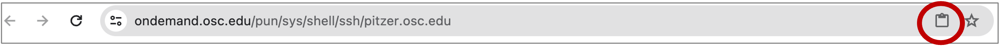

# (Don't run this)
x <- 5
x[1] 5In this session, we’ll learn:
We can conceptualize Unix (or “Unix-like” / “*nix”)1 as a family of operating systems, which includes Linux and Mac but not Windows.
Versus programs with graphical user interfaces:
Versus scripting languages like Python or R:
“Directory” (or “dir” for short) is the term for folder that is commonly used in Unix contexts.
The Unix directory structure is hierarchical, with a single starting point: the root, depicted as /.
A “path” gives the location of a file or directory, in which directories are separated by forward slashes /.
For example, the path to our OSC project’s dir is /fs/ess/PAS2700. This means: the dir PAS2700 is located inside the dir ess, which in turn is inside the dir fs, which in turn is in the computer’s root directory.
The OSC dir structure is somewhat different from that of a personal computer. Our Home dir is not /home/<username> like in the book and the schematic on the left, but /users/<a-project>/<username>.


Clusters and then Pitzer Shell Access.You can’t right-click in this shell, so to copy-and-paste:
Try copying and pasting a random word into your shell. This may just work, you may get a permission pop-up, or it may silently fail — if the latter, click on the clipboard icon in your browser’s address bar (see red circle in screenshot below):

Inside your terminal, the “prompt” indicates that the shell is ready for a command. What is shown exactly varies across shells and can also be customized, but our prompts at OSC should show the following information:
<username>@<node-name> <working-dir>]$
For example (and note that ~ means your Home dir):
[jelmer@pitzer-login02 ~]$ We type our commands after the dollar sign, and then press Enter to execute the command. When the command has finished executing, we’ll get our prompt back and can type a new command.
OSC prints welcome messages and storage quota information when you open a shell. To reduce the amount of text on the screen, I will clear the screen now and regularly throughout. This can be done with the keyboard shortcut Ctrl+L.
date and pwdThe Unix shell comes with hundreds of “commands”: small programs that perform specific actions. If you’re familiar with R or Python, a Unix command is like an R/Python function.
Let’s start with a few simple commands:
The date command prints the current date and time:
dateThu Feb 29 14:58:19 EST 2024The pwd (Print Working Directory) command prints the path to the directory you are currently located in:
pwd/users/PAS0471/jelmerBoth of those commands provided us with some output. That output was printed to screen, which is the default behavior for nearly every Unix command.
cal command — and options & argumentsThe cal command is another example of a command that simply prints some information to the screen, in this case a calendar. We’ll use it to learn about command options and arguments.
Invoking cal without options or arguments will show the current month:
cal February 2024
Su Mo Tu We Th Fr Sa
1 2 3
4 5 6 7 8 9 10
11 12 13 14 15 16 17
18 19 20 21 22 23 24
25 26 27 28 29Use the option -j (dash and then j) for a Julian calendar, in which day numbering is continuous instead of restarting each month:
# Make sure to leave a space between `cal` and `-j`!
cal -j February 2024
Sun Mon Tue Wed Thu Fri Sat
32 33 34
35 36 37 38 39 40 41
42 43 44 45 46 47 48
49 50 51 52 53 54 55
56 57 58 59 60Use the -3 option to show 3 months (adding the previous and next month):
cal -3 January 2024 February 2024 March 2024
Su Mo Tu We Th Fr Sa Su Mo Tu We Th Fr Sa Su Mo Tu We Th Fr Sa
1 2 3 4 5 6 1 2 3 1 2
7 8 9 10 11 12 13 4 5 6 7 8 9 10 3 4 5 6 7 8 9
14 15 16 17 18 19 20 11 12 13 14 15 16 17 10 11 12 13 14 15 16
21 22 23 24 25 26 27 18 19 20 21 22 23 24 17 18 19 20 21 22 23
28 29 30 31 25 26 27 28 29 24 25 26 27 28 29 30
31 We can always combine multiple options, for example:
cal -j -3 January 2024 February 2024 March 2024
Sun Mon Tue Wed Thu Fri Sat Sun Mon Tue Wed Thu Fri Sat Sun Mon Tue Wed Thu Fri Sat
1 2 3 4 5 6 32 33 34 61 62
7 8 9 10 11 12 13 35 36 37 38 39 40 41 63 64 65 66 67 68 69
14 15 16 17 18 19 20 42 43 44 45 46 47 48 70 71 72 73 74 75 76
21 22 23 24 25 26 27 49 50 51 52 53 54 55 77 78 79 80 81 82 83
28 29 30 31 56 57 58 59 60 84 85 86 87 88 89 90
91 Handily, options can be “pasted together” like so (output not shown - same as above):
cal -j3As we’ve seen, options are specified with a dash - (or --, as you’ll see later). So far, we’ve only worked with the type of options that are also called “flags”, which change some functionality in an ON/OFF type way:
-j-3.In general terms, options change the behavior of a command.
Whereas options change the behavior of a command, arguments typically tell the command what to operate on. Most commonly, these are file or directory paths.
Admittedly, the cal command is not the best illustration of this pattern — when you give it one argument, this is supposed to be the year to show a calendar for:
cal 2020 2020
January February March
Su Mo Tu We Th Fr Sa Su Mo Tu We Th Fr Sa Su Mo Tu We Th Fr Sa
1 2 3 4 1 1 2 3 4 5 6 7
5 6 7 8 9 10 11 2 3 4 5 6 7 8 8 9 10 11 12 13 14
12 13 14 15 16 17 18 9 10 11 12 13 14 15 15 16 17 18 19 20 21
19 20 21 22 23 24 25 16 17 18 19 20 21 22 22 23 24 25 26 27 28
26 27 28 29 30 31 23 24 25 26 27 28 29 29 30 31
# [...output truncated, entire year is shown...]We can also combine options and arguments:
cal -j 2020 2020
January February
Sun Mon Tue Wed Thu Fri Sat Sun Mon Tue Wed Thu Fri Sat
1 2 3 4 32
5 6 7 8 9 10 11 33 34 35 36 37 38 39
12 13 14 15 16 17 18 40 41 42 43 44 45 46
19 20 21 22 23 24 25 47 48 49 50 51 52 53
26 27 28 29 30 31 54 55 56 57 58 59 60
# [...output truncated, entire year is shown...]So, arguments to a command:
- (or --)Many commands – and other command-line programs! – have a -h option for help, which usually gives a concise summary of the command’s syntax, i.e. it’s available options and arguments:
cal -h
Usage:
cal [options] [[[day] month] year]
Options:
-1, --one show only current month (default)
-3, --three show previous, current and next month
-s, --sunday Sunday as first day of week
-m, --monday Monday as first day of week
-j, --julian output Julian dates
-y, --year show whole current year
-V, --version display version information and exit
-h, --help display this help text and exitman command (Click to expand)
An alternative way of getting help for Unix commands is with the man command:
man calThis manual page often includes a lot more details than the --help output, and it is opened inside a “pager” rather than printed to screen: type q to exit the pager that man launches.
cal -h, and try an option we haven’t used yet4. (You can also combine this new option with other options, if you want.)# Print a calendar with Monday as the first day of th week (instead of the default, Sunday)
cal -m February 2024
Mo Tu We Th Fr Sa Su
1 2 3 4
5 6 7 8 9 10 11
12 13 14 15 16 17 18
19 20 21 22 23 24 25
26 27 28 29--). Why would those be useful?For example:
cal --julian --monday February 2024
Mon Tue Wed Thu Fri Sat Sun
32 33 34 35
36 37 38 39 40 41 42
43 44 45 46 47 48 49
50 51 52 53 54 55 56
57 58 59 60The advantage of using long options is that it is much more likely that any reader of the code (including yourself next week) will immediately understand what these options are doing.
Note that long options cannot be “pasted together” like short options.
cal [options] [[[day] month] year] means. Can you print a calendar for April 2017?First of all, the square brackets around options and all of the possible arguments means that none of these are required — as we’ve seen, just cal (with no options or arguments) is a valid command.
The structure of the multiple square brackets around the day-month-year arguments indicate that:
Therefore, to print a calendar for April 2017:
cal 4 2017 April 2017
Su Mo Tu We Th Fr Sa
1
2 3 4 5 6 7 8
9 10 11 12 13 14 15
16 17 18 19 20 21 22
23 24 25 26 27 28 29
30cd and command “actions”All the commands so far “merely” provided some information, which was printed to screen.
But many commands perform another kind of action. For example, the command cd will change your working directory. And like many commands that perform a potentially invisible action, cd normally has no output at all.
First, let’s check again where we are — we should be in our Home directory:
# (Note: you will have a different project listed in your Home dir. This is not important.)
pwd/users/PAS0471/jelmerNow, let’s use cd to move to another directory by specifying the path to that directory as an argument:
cd /fs/ess/PAS2700# Double-check that we moved:
pwd/fs/ess/PAS2700In summary:
cal, cd accepts an argument. Unlike cal, this argument takes the form of a path that the command should operate on, which is much more typical.cd gives no output when it successfully changed the working directory. This is very common behavior for Unix commands that perform operations: when they succeed, they are silent.Let’s also see what happens when cd does not succeed — it gives an error:
cd /fs/ess/PAs2700-bash: cd: /fs/ess/PAs2700: No such file or directory# is considered a comment instead of code!# This entire line is a comment - you can run it and nothing will happen
pwd # 'pwd' will be executed but everything after the '#' is ignored/users/PAS0471/jelmerUsing keyboard shortcuts help you work much more efficiently in the shell. And some are invaluable:
Up / Down arrow keys to cycle through your command history.Type /f and press Tab (will autocomplete to /fs/)
Add e (/fs/e) and press Tab (will autocomplete to /fs/ess/).
Add PAS (/fs/ess/PAS) and press Tab. Nothing should happen: there are multiple (many!) options.
Press Tab Tab (i.e., twice in quick succession) and it should say:
Display all 503 possibilities? (y or n)Type n to answer no: we don’t need to see all the dirs starting with PAS.
Add 27 (/fs/ess/PAS27) and press Tab (should autocomplete to /fs/ess/PAS2700).
Press Enter. What does the resulting error mean?
bash: /fs/ess/PAS2700/: Is a directoryPress ⇧ to get the previous “command” back on the prompt.
Press Ctrl+A to move to the beginning of the line at once.
Add cd and a space in front of the dir, and press Enter again.
cd /fs/ess/PAS2700/To simulate a long-running command that we may want to abort, we can use the sleep command, which will make the computer wait for a specified amount of time until giving your prompt back. Run the below command and instead of waiting for the full 60 seconds, press Ctrl + C to get your prompt back sooner!
sleep 60sOr, use Ctrl + C after running this example of an incomplete command (an opening parenthesis ():
(Note that even on Macs, you should use Ctrl instead of switching them out for Cmd as you may be used to doing (in some cases, like copy/paste, both work).
| Shortcut | Function |
|---|---|
| Tab | Tab completion |
| ⇧ / ⇩ | Cycle through previously issued commands |
| Ctrl(+Shift)+C | Copy selected text |
| Ctrl(+Shift)+V | Paste text from clipboard |
| Ctrl+A / Ctrl+E | Go to beginning/end of line |
| Ctrl+U /Ctrl+K | Cut from cursor to beginning / end of line |
| Ctrl+W | |
| Ctrl+Y | Paste (“yank”) text that was cut with one of the shortcuts above |
| Alt+. / Esc+. | Retrieve last argument of previous command (very useful!) (Esc+. for Mac) |
| Ctrl+R | Search history: press Ctrl+R again to cycle through matches, Enter to put command in prompt. |
| Ctrl+C | Cancel (kill/stop/abort) currently active command |
| Ctrl+D | Exit (a program or the shell, depending on the context) (same as exit command) |
| Ctrl+L | Clear the screen (same as clear command) |
You may be familiar with the concept of variables from previous experience with perhaps R or another language. Variables can hold values and other pieces of data and are essential in programming.
Assigning and printing the value of a variable in R:
# (Don't run this)
x <- 5
x[1] 5Assigning and printing the value of a variable in the Unix shell:
x=5
echo $x5= in x=5.$ prefix to reference (but not to assign) variables in the shell5.echo command, a general command to print text, to print the value of $x (cf. in R).By the way, echo can also print literal text (as shown below) or combinations of literals and variables (next exercise):
echo "Welcome to PLNTPTH 6193"Welcome to PLNTPTH 6193Environment variables are pre-existing variables that have been automatically assigned values. Two examples:
# $HOME contains the path to your Home dir:
echo $HOME/users/PAS0471/jelmer# $USER contains your user name:
echo $USERjelmerUsing an environment variable, print “Hello, my name is <your username>” (e.g. “Hello, my name is natalie”).
# (This would also work without the " " quotes)
echo "Hello, my name is $USER"Hello, my name is jelmerOur base OSC directory is the /fs/ess/PAS2700 dir we are currently in. Now, let’s all create our own subdir in here, and get the data from the CSB book.
Create a directory for yourself using the mkdir (make dir) command:
mkdir users/$USERMove there using cd:
# (Instead of $USER, you can also start typing your username and press Tab)
cd users/$USERGet the files associated with the CSB book by “cloning” (downloading) its Git repository:
git clone https://github.com/CSB-book/CSB.gitMove into the sandbox dir for the Unix chapter (remember to use tab completion):
cd CSB/unix/sandboxls to list filesThe ls command, short for “list”, will list files and directories — by default those in your current working dir:
# (You should be in /fs/ess/PAS2700/users/$USER/CSB/unix/data)
lsBuzzard2015_about.txt Gesquiere2011_about.txt Marra2014_about.txt miRNA Pacifici2013_data.csv Saavedra2013_about.txt
Buzzard2015_data.csv Gesquiere2011_data.csv Marra2014_data.fasta Pacifici2013_about.txt Saavedra2013ls output colors (click to expand)
The ls output above does not show the different colors you should see in your shell — the most common ones are:
miRNA and Saavedra2013 above)For which dir ls lists its contents can be changed with arguments, and how it shows the output can be changed with options. For example, we can call ls with the option -l (lowercase L):
ls -l total 1793
-rw-rw----+ 1 jelmer PAS0471 562 Feb 24 20:30 Buzzard2015_about.txt
-rw-rw----+ 1 jelmer PAS0471 39058 Feb 24 20:30 Buzzard2015_data.csv
-rw-rw----+ 1 jelmer PAS0471 447 Feb 24 20:30 Gesquiere2011_about.txt
-rw-rw----+ 1 jelmer PAS0471 38025 Feb 24 20:30 Gesquiere2011_data.csv
-rw-rw----+ 1 jelmer PAS0471 756 Feb 24 20:30 Marra2014_about.txt
-rw-rw----+ 1 jelmer PAS0471 566026 Feb 24 20:30 Marra2014_data.fasta
drwxrwx---+ 2 jelmer PAS0471 4096 Feb 24 20:30 miRNA
-rw-rw----+ 1 jelmer PAS0471 520 Feb 24 20:30 Pacifici2013_about.txt
-rw-rw----+ 1 jelmer PAS0471 1076150 Feb 24 20:30 Pacifici2013_data.csv
drwxrwx---+ 2 jelmer PAS0471 4096 Feb 24 20:30 Saavedra2013
-rw-rw----+ 1 jelmer PAS0471 322 Feb 24 20:30 Saavedra2013_about.txtIt lists the same items as earlier, but printed in a different format: one item per line, with additional information such as the date and time each file was last modified, and file sizes in bytes (to the left of the date).
Let’s add another option, -h:
ls -lhtotal 1.8M
-rw-rw----+ 1 jelmer PAS0471 562 Feb 24 20:30 Buzzard2015_about.txt
-rw-rw----+ 1 jelmer PAS0471 39K Feb 24 20:30 Buzzard2015_data.csv
-rw-rw----+ 1 jelmer PAS0471 447 Feb 24 20:30 Gesquiere2011_about.txt
-rw-rw----+ 1 jelmer PAS0471 38K Feb 24 20:30 Gesquiere2011_data.csv
-rw-rw----+ 1 jelmer PAS0471 756 Feb 24 20:30 Marra2014_about.txt
-rw-rw----+ 1 jelmer PAS0471 553K Feb 24 20:30 Marra2014_data.fasta
drwxrwx---+ 2 jelmer PAS0471 4.0K Feb 24 20:30 miRNA
-rw-rw----+ 1 jelmer PAS0471 520 Feb 24 20:30 Pacifici2013_about.txt
-rw-rw----+ 1 jelmer PAS0471 1.1M Feb 24 20:30 Pacifici2013_data.csv
drwxrwx---+ 2 jelmer PAS0471 4.0K Feb 24 20:30 Saavedra2013
-rw-rw----+ 1 jelmer PAS0471 322 Feb 24 20:30 Saavedra2013_about.txtThe only difference is in the format of the column reporting the sizes of the items listed.
We now have “Human-readable filesizes” (hence -h), where sizes on the scale of kilobytes will be shown with Ks, of megabytes with Ms, and of gigabytes with Gs. That can be really useful especially for very large files.
We can also list files in directories other than the one we are in, by specifying that dir as an argument:
ls miRNAggo_miR.fasta hsa_miR.fasta miR_about.txt miRNA_about.txt ppa_miR.fasta ppy_miR.fasta ptr_miR.fasta ssy_miR.fastaAnd like we saw with cal, we can combine options and arguments:
ls -lh miRNAtotal 320K
-rw-rw----+ 1 jelmer PAS0471 18K Feb 24 20:30 ggo_miR.fasta
-rw-rw----+ 1 jelmer PAS0471 131K Feb 24 20:30 hsa_miR.fasta
-rw-rw----+ 1 jelmer PAS0471 104 Feb 24 20:30 miR_about.txt
-rw-rw----+ 1 jelmer PAS0471 104 Feb 24 20:30 miRNA_about.txt
-rw-rw----+ 1 jelmer PAS0471 4.0K Feb 24 20:30 ppa_miR.fasta
-rw-rw----+ 1 jelmer PAS0471 33K Feb 24 20:30 ppy_miR.fasta
-rw-rw----+ 1 jelmer PAS0471 29K Feb 24 20:30 ptr_miR.fasta
-rw-rw----+ 1 jelmer PAS0471 495 Feb 24 20:30 ssy_miR.fastaLet’s move into the sandbox dir in preparation for the next sections:
cd ../sandbox
lsPapers and reviewscp to copy filesThe cp command copies files and/or dirs from one location to another. It has two required arguments: what you want to copy (source), and where you want to copy it to (destination). Its basic syntax is cp <source> <destination>.
For example, to copy a file to our current working directory using the . shortcut, keeping the original file name:
cp ../data/Buzzard2015_about.txt .We can also copy using a new name for the copy:
cp ../data/Buzzard2015_about.txt buzz2.txtcp will by default refuse to copy directories and their contents — that is, it is not “recursive” by default. The -r option is needed for recursive copying:
cp -r ../data/ . Check the contents of the sandbox dir again now that we’ve copied several items there:
lsbuzz2.txt Buzzard2015_about.txt data Papers and reviewsmv to move and rename filesUse mv both to move and rename files (this is fundamentally the same operation):
# Same directory, different file name ("renaming")
mv buzz2.txt buzz_copy.txt# Different directory, same file name ("moving")
mv buzz_copy.txt data/Unlike cp, mv is recursive by default, so you won’t need the -r option.
mv and cp commands will by default:
-v option for verbose to make them report what they do).-i option for interactive to make them ask before overwriting).rm to remove files and dirsThe rm command removes files and optionally dirs — here, we’ll remove the file copy we made above:
rm Buzzard2015_about.txtLike with cp, the -r option is needed to make the command work recursively:
# First we create 3 levels of dirs - we need `-p` to make mkdir work recursively:
mkdir -p d1/d2/d3
# Then we try to remove the d1 dir - which fails:
rm d1rm: cannot remove ‘d1’: Is a directory# But it does work (silently!) with the '-r' option:
rm -r d1rm with caution! (Click to expand)
rm -r can be very dangerous — for example rm -r / would at least attempt to remove the entire contents of the computer, including the operating system.
A couple ways to take precautions:
-i option, which will have you confirm each individual removal (can be tedious)rmdir command which will do just (and only) that — that way, if the dir isn’t empty after all, you’ll get an error.cp and mv behaviorFor both cp and mv, when operating on files (and this works equivalently for dirs):
With that in mind, try to answer the following questions about this command:
cp Buzzard2015_about.txt more_data/Because we put a trailing forward slash in more_data/, we are making clear that we are referring to a directory. So the file should be copied into a dir more_data, and keep the same file name.
However, the more_data/ dir does not exist, and cp will not create a dir on the fly, so this will fail:
cp Buzzard2015_about.txt more_data/cp: cannot create regular file ‘more_data/’: Not a directoryIf we had omitted the trailing forward slash, we would have created a copy of the file with file name more_data (note that no file extension is needed, per se).
P.S: To make the original intention work, first create the destination dir:
mkdir more_data
cp Buzzard2015_about.txt more_data/Note also that once the more_data dir exists, it does not make a difference whether or not you using a trailing slash (!).
cd ../data # Move to the data dir for the next commandscatThe cat command will print the entire contents of (a) file(s) to screen:
cat Marra2014_about.txtData published by:
Marra NJ, DeWoody JA (2014) Transcriptomic characterization of the immunogenetic repertoires of heteromyid rodents. BMC Genomics 15: 929. http://dx.doi.org/10.1186/1471-2164-15-929
Data description:
File D_spec_spleen_filtered.fasta (57.01Mb) contains Dipodomys spectabilis spleen transcriptome data. Combined assembly of 454 reads and fragmented Illumina assembly (see methods of associated paper) in gsAssembler version 2.6.
Note that we truncated the original file to 1% of its original size and named it Marra2014_data.txt
Data taken from:
Marra NJ, DeWoody JA (2014) Data from: Transcriptomic characterization of the immunogenetic repertoires of heteromyid rodents. Dryad Digital Repository. http://dx.doi.org/10.5061/dryad.qn474head and tailThe head and tail commands will print the first or last lines of a file:
head & tail’s defaults are to print 10 lines:
head Gesquiere2011_data.csvmaleID GC T
1 66.9 64.57
1 51.09 35.57
1 65.89 114.28
1 80.88 137.81
1 32.65 59.94
1 60.52 101.83
1 65.89 65.84
1 52.72 43.98
1 84.85 102.31Use the -n option to specify the number of lines to print:
head -n 3 Gesquiere2011_data.csvmaleID GC T
1 66.9 64.57
1 51.09 35.57A neat trick with tail is to start at a specific line, often used to skip the header line, like in this example6:
tail -n +2 Gesquiere2011_data.csv1 66.9 64.57
1 51.09 35.57
1 65.89 114.28
1 80.88 137.81
1 32.65 59.94
1 60.52 101.83
1 65.89 65.84
1 52.72 43.98
1 84.85 102.31
1 98.25 149.61
[...output truncated...]wc -lThe wc command is different from the previous commands, which all printed file contents. By default, wc will count lines, words, and characters — but it is most commonly used to only count lines, with the -l option:
wc -l Marra2014_about.txt9 Marra2014_about.txtStart by moving back to the sandbox dir:
cd ../sandboxThe regular output of a command is also called “standard out” (“stdout”). As we’ve seen many times now, such output is by default printed to screen, but it can alternatively be “redirected”, such as into a file.
With “>”, we redirect output to a file:
First, let’s remind ourselves what echo does without redirection:
echo "My first line"My first lineNow, let’s redirect to a new file test.txt — no output is printed, as it went into the file:
echo "My first line" > test.txtcat test.txtMy first lineLet’s redirect another line into that same file:
echo "My second line" > test.txt
cat test.txtMy second lineThat may not have been what we intended! As explained above, the file was overwritten.
With “>>”, however, we append the output to a file:
echo "My third line" >> test.txt
cat test.txtMy second line
My third lineRecall from today’s previous examples that a file name can be given as an argument to many commands — for example, see the following sequence of commands:
# First we redirect the ls output to a file
ls ../data/Saavedra2013 > filelist.txt
# Let's check what that looks like:
head -n 5 filelist.txtn10.txt
n11.txt
n12.txt
n13.txt
n14.txt# Then we count the nr. of lines, which is the number of files+dirs in Saavedra2013:
wc -l filelist.txt59 filelist.txtHowever, most commands also accept input from so-called “standard input” (stdin) using the pipe, “|”:
ls ../data/Saavedra2013 | wc -l59When we use the pipe, the output of the command on the left-hand side (a file listing, in this case) is no longer printed to screen but is redirected into the wc command, which will gladly accept input that way instead of via an argument with a file name like in the earlier example.
Pipes are useful because they avoid having to write/read intermediate files — this saves typing, makes the operation quicker, and reduces file clobber.
cutWe’ll now turn to some commands that may be described as Unix “data tools”: cut, sort, uniq, tr, and grep.
Most of the examples will use the file Pacifici2013_data.csv, so let’s have a look at the contents of that file first:
cd ../data
head -n 3 Pacifici2013_data.csvTaxID;Order;Family;Genus;Scientific_name;AdultBodyMass_g;Sources_AdultBodyMass;Max_longevity_d;Sources_Max_longevity;Rspan_d;AFR_d;Data_AFR;Calculated_GL_d;GenerationLength_d;Sources_GL
7580;Rodentia;Cricetidae;Eligmodontia;Eligmodontia typus;17.37;PanTHERIA;292;PanTHERIA;254.64;73.74;calculated;147.5856;147.5856;Rspan-AFR(SM+Gest)
42632;Rodentia;Cricetidae;Microtus;Microtus oregoni;20.35;PanTHERIA;456.25;PanTHERIA;445.85;58.06;calculated;187.3565;187.3565;Rspan-AFR(SM+Gest)In bioinformatics, we usually work with so-called “plain-text” files. These are simple files that can be opened by any text editor and Unix shell tool, as opposed to more complex “binary” formats like Excel or Word files. Almost all common genomics file formats are plain-text.
“Tabular” files contain data that is arranged in a rows-and-columns format, like a table or an Excel worksheet.
Plain-text tabular files, like Pacifici2013_data.csv, contain a specific “delimiter” to delimit columns — most commonly:
.tsv extension for Tab-Separated Values (“TSV file”)..csv extension for Comma-Separated Values (“CSV file”).Pacifici2013_data.csv file appear to contain? (Click for the answer)
; — “even though” the file has a .csv extension.
The cut command will select/“cut out” one or more columns from a tabular file:
-f option to specify the desired column(s) / “field”(s).-d.# Select the first column of the file:
cut -d ";" -f 1 Pacifici2013_data.csvTaxID
7580
42632
42653
42662
16652
[...output truncated...]That worked, but a ton of output was printed, and we may find ourselves scrolling to the top to see the first few lines – in many cases, it can be useful to pipe the output to head to see if our command works:
cut -d ";" -f 1 Pacifici2013_data.csv | head -n 3TaxID
7580
42632cut (Click to expand)
To select multiple columns, use a range or comma-delimited list:
cut -d ";" -f 1-4 Pacifici2013_data.csv | head -n 3TaxID;Order;Family;Genus
7580;Rodentia;Cricetidae;Eligmodontia
42632;Rodentia;Cricetidae;Microtuscut -d ";" -f 2,8 Pacifici2013_data.csv | head -n 3Order;Max_longevity_d
Rodentia;292
Rodentia;456.25cut, sort, and uniq to create a listLet’s say we want an alphabetically sorted list of animal orders from the Pacifici2013_data.csv file. To do this, we’ll need two new commands:
sort to sort/order/arrange rows, by default in alphanumeric order.uniq to remove duplicates (i.e., keep all distinct) entries from a sorted file/listWe’ll build up a small “pipeline” to do this, step-by-step and piping the output into head every time. First, we get rid of the header line with our tail trick:
tail -n +2 Pacifici2013_data.csv | head -n 57580;Rodentia;Cricetidae;Eligmodontia;Eligmodontia typus;17.37;PanTHERIA;292;PanTHERIA;254.64;73.74;calculated;147.5856;147.5856;Rspan-AFR(SM+Gest)
42632;Rodentia;Cricetidae;Microtus;Microtus oregoni;20.35;PanTHERIA;456.25;PanTHERIA;445.85;58.06;calculated;187.3565;187.3565;Rspan-AFR(SM+Gest)
42653;Rodentia;Cricetidae;Peromyscus;Peromyscus gossypinus;27.68;PanTHERIA;471.45833335;PanTHERIA;444.87833335;72.58;calculated;201.59471667;201.5947166715;Rspan-AFR(SM+Gest)
42662;Macroscelidea;Macroscelididae;Elephantulus;Elephantulus myurus;59.51;PanTHERIA;401.5;PanTHERIA;412.34;90.48;calculated;210.0586;210.0586;Rspan-AFR(SM+Gest)
16652;Rodentia;Cricetidae;Peromyscus;Peromyscus boylii;23.9;PanTHERIA;547.5;PanTHERIA;514.13;79.97;calculated;229.0677;229.0677;Rspan-AFR(SM+Gest)Second, we select our column of interest with cut:
tail -n +2 Pacifici2013_data.csv | cut -d ";" -f 2 | head -n 5Rodentia
Rodentia
Rodentia
Macroscelidea
RodentiaThird, we pipe to sort to sort the result:
tail -n +2 Pacifici2013_data.csv | cut -d ";" -f 2 | sort | head -n 5Afrosoricida
Afrosoricida
Afrosoricida
Afrosoricida
AfrosoricidaFourth and finally, we use uniq to only keep unique rows (values):
tail -n +2 Pacifici2013_data.csv | cut -d ";" -f 2 | sort | uniqAfrosoricida
Carnivora
Cetartiodactyla
Chiroptera
Cingulata
Dasyuromorphia
Dermoptera
Didelphimorphia
[...output truncated...]uniq -c (Click to expand)
With a very small modification to our pipeline, using uniq’s -c option (for count), we can generate a “count table” instead of a simple list:
tail -n +2 Pacifici2013_data.csv | cut -d ";" -f 2 | sort | uniq -c 54 Afrosoricida
280 Carnivora
325 Cetartiodactyla
1144 Chiroptera
21 Cingulata
[...output truncated...]grep to print lines matching a patternThe grep command is useful to find specific text or patterns in a file. By default, it will print each line that contains a “match” in full. It’s basic syntax is grep "<pattern>" file.
For example, this will print all lines from Pacifici2013_data.csv that contain “Vombatidae”:
grep "Vombatidae" Pacifici2013_data.csv40555;Diprotodontia;Vombatidae;Lasiorhinus;Lasiorhinus latifrons;26163.8;PanTHERIA;9928;"PanTHERIA;AnAge";9317.5;652.24;calculated;3354.315;3354.315;Rspan-AFR(SM+Gest)
40556;Diprotodontia;Vombatidae;Vombatus;Vombatus ursinus;26000;PanTHERIA;10238.25;"PanTHERIA;AnAge";9511.6;783.65;calculated;3542.014;3542.014;Rspan-AFR(SM+Gest)
11343;Diprotodontia;Vombatidae;Lasiorhinus;Lasiorhinus krefftii;31849.99;PanTHERIA;10950;"PanTHERIA;AnAge";no information;no information;no information;no information;3354.315;Mean_congenerics_same_body_massInstead of printing matching lines, we can also count them with the -c option:
grep -c "Chiroptera" Pacifici2013_data.csv1144The option -v inverts grep’s behavior and will print all lines not matching the pattern — here, we’ll combine -v and -c to count the number of lines that do not contain “Vombatidae”:
grep -vc "Vombatidae" Pacifici2013_data.csv5424grep tips
Vombat” matches Vombatidae.grep has many other useful options:
-i to ignore case-r to search files recursively-w to match “words”trtr for translate will substitute characters – here, any a for a b:
echo "aaaabbb" | tr a bbbbbbbbOddly enough tr does not take a file name as an argument, so how can we provide it with input from a file? The easiest way is by using a pipe (note that the book also shows another method):
cat Pacifici2013_data.csv | tr ";" "\t" | head -n 3TaxID Order Family Genus Scientific_name AdultBodyMass_g Sources_AdultBodyMass Max_longevity_d Sources_Max_longevity Rspan_d AFR_d Data_AFR Calculated_GL_d GenerationLength_d Sources_GL
7580 Rodentia Cricetidae Eligmodontia Eligmodontia typus 17.37 PanTHERIA 292 PanTHERIA 254.64 73.74 calculated 147.5856 147.5856 Rspan-AFR(SM+Gest)
42632 Rodentia Cricetidae Microtus Microtus oregoni 20.35 PanTHERIA 456.25 PanTHERIA 445.85 58.06 calculated 187.3565 187.3565 Rspan-AFR(SM+Gest)The example above converted the ; delimited to a Tab (i.e., a CSV file to a TSV file), where \t is a regular expression meaning Tab. (Though note that we didn’t modify the original file nor saved the output in a new file.)
tr (Click to expand)
Delete all a’s:
echo "aabbccddee" | tr -d abbccddeeRemove consecutive duplicates a’s:
echo "aabbccddee" | tr -s aabbccddeetr also works well with multiple values and replacements (Click to expand)
echo "123456789" | tr 1-5 0 # Replace any of 1-5 with 0000006789echo "ACtGGcAaTT" | tr actg ACTGACTGGCAATTecho "aabbccddee" | tr a-c 1-3112233ddeetr outputModify our command in which we changed the delimiter to a Tab to redirect the output to a new file, Pacifici2013_data.tsv (note the extension) in the sandbox dir (that’s not where you are located yourself).
cat Pacifici2013_data.csv | tr ";" "\t" > ../Pacifici2013_data.tsvThis is the Unix philosophy: Write programs that do one thing and do it well. Write programs to work together. Write programs to handle text streams, because that is a universal interface.
— Doug McIlory
Advantages of a modular approach:
Text “streams”?
Rather than loading entire files into memory, process them one line at a time. Very useful with large files!
# This command would combine all files in the working dir ending in `.fa`
# (i.e. FASTA files) into a single file -- even if that's multiple GBs,
# this will not be a heavy lift at all!
cat *.fa > combined.faTechnically, the latter terms are more correct, as Unix formally does refer to a specific operating system.↩︎
Command-line Interface (CLI), as opposed to Graphical User Interface (GUI)↩︎
Though some commands are flexible and accept either order.↩︎
There really is only one proper additional options: two others reflect the defaults, and then there’s the version option.↩︎
Because of this, anytime you see a word/string that starts with a $ in the shell, you can safely assume that it is a variable.↩︎
We’ll see this in action in a bit↩︎
Even though for “literal string” like in the examples above, as opposed to regular expressions, this is not strictly necessary, it’s good habit to always quote.↩︎